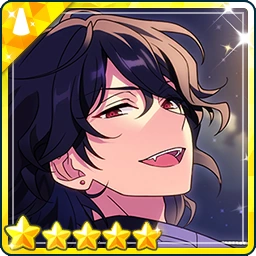
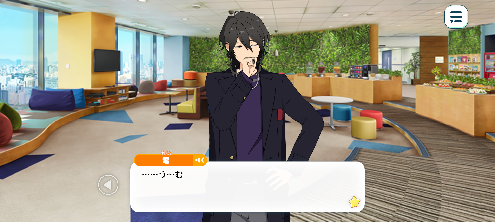
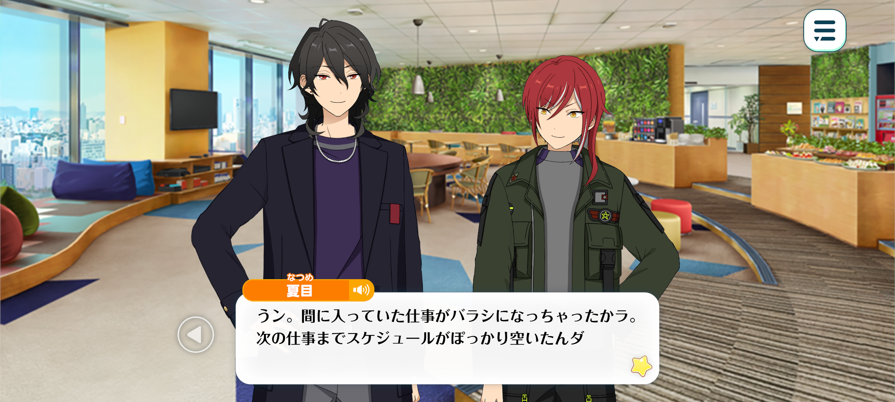
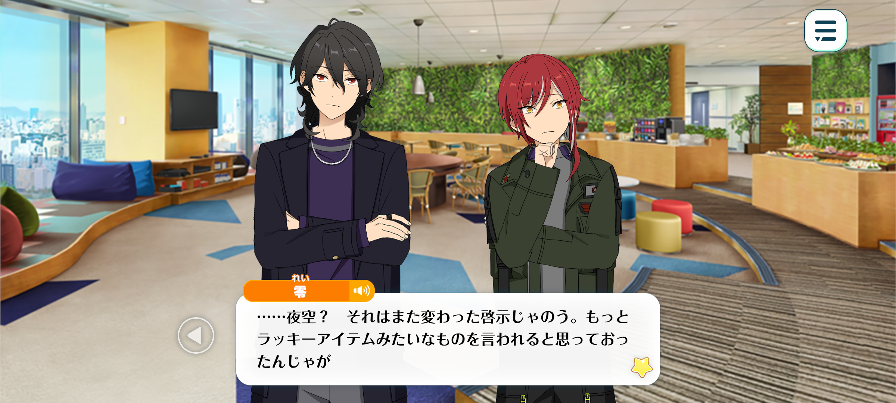
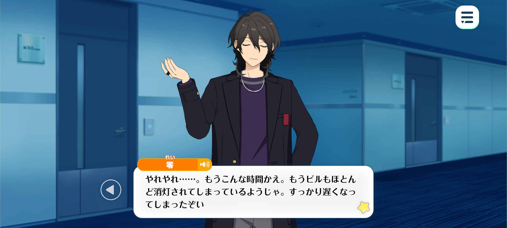

The King Beneath The Moonlight | Chapter 2
Idol Story (FS2)



Rei: …Hmm~
(I suppose I am a little curious… The Little Miss said there was nothing wrong with those photographs. And yet, I can't help feeling there was still something she wasn't entirely happy with.)
(She didn't seem to understand what was bothering her, either.)
(She could tell something was missing, but couldn't quite put it into words. And so, in the end, she simply said they were fine.)
(It's difficult to be completely satisfied with everything. Neither idols nor staff can afford to spend endless amounts of time retaking photographs and the like. Not to mention the deadlines we have to meet.)
(She must have given her approval as a Producer after weighing up all those factors. There's little more I can say about it.)
(Still, I feel rather awful for putting her in such a predicament.)
(If nothing else, I should at least be able to give her a clear answer about the one thing she's struggling with.)
(What was it she said...? That they didn't feel enough like me...?)
Hnng…

Natsume: Well, isn't this a curious sigHT? To think I'd find Rei-niisan looking so flustered in this manNER.
Rei: —Hm? Ah, Sakasaki-kun! What a coincidence, finding us both on break at the same time.
Natsume: Indeed. My previously scheduled work has been taken care oF, so I have a little time to spare before my next joB.
Speaking of whiCH... You seemed rather lost in thought just now. Is something troubling yoU?
Rei: Hm? Ah, yes, indeed... Well, you see...
I believe finding oneself is a rather difficult thing to do.
Natsume: Is that sO? I don't know the full situaTION, but perhaps I could help you discover what it is you're looking foR. After all, I have both the time and the ability to read your forTUNE, Rei-niisan.
Rei: No, there's really no need for you to concern yourself with my troubles, Sakasaki-kun. Please, don't spend your precious free time worrying about me.
Natsume: There's no need to hold baCK. You're thinking about it too muCH. Of course, there are certain limitations to what we can do when reading fortunes in a place like thIS. But using a pendulum should be simple enouGH.
Predictions may or may not come trUE... Fortune-telling isn't something that can be confined by a fixed set of rulES.
It's much like a paper lantern, casting a faint glow to illuminate the treacherous path that lies aheAD.
Do not stumble along that roaD. Do not stray down the wrong paTH. Though, in the end, whether you choose to move forward or not is entirely up to yOU.
Rei: Kukuku... I see. Well, in that case, I see no reason to refuse.
Sakasaki-kun, would you be so kind as to read my fortune?
Natsume: Why, of courSE, Rei-niisan ♪
Natsume: Hmm... Yes, yes. This symbolises a staR... No, perhaps the night sKY? If you turn your gaze towards the night sky, you may find a favourable oMEN.
Rei: ...The night sky? My, what an unusual revelation once again. I had been expecting something more along the lines of a lucky charm.
So, am I to make a wish upon a star? Kukuku... How terribly romantic.

Rei: Dearie me… Look at the time. It seems the building has already turned off all its lights. I've stayed rather late.
It's been quite some time since my mind has felt this clear. Well, I shouldn't simply stand around enjoying myself.
Unlike at Yumenosaki, I could get into trouble for loitering here and being mistaken for someone suspicious. There's nothing else for me to do, so I suppose I should head home.
(...Or perhaps not. I'm reminded of the fortune Sakasaki-kun read for me today. Surely there's no harm in taking a look at the night sky.)
(Indeed. And who knows? Even that little decision might lead to a special chance encounter. Since I'm already here, a little detour won't hurt anyone.)

Rei: Ah… The winter sky is so vast. The stars and moon are both wonderfully clear tonight.
(I have lived for just as many years as ordinary humans, and have imitated their way of life. By sharing this world with them, I've grown accustomed to this physical form as well… And yet, even after all this time, I feel most at peace at night, beneath the light of the moon.)
(It's been a while since I've felt this way…♪)
♪~♪~
Hm?
Ah. Is that the Little Miss? Whatever are you doing up at this hour?
I see. You were held up with work? Jou-chan, you're still working so late. I appreciate all your hard work.
You were just on your way home, but happened to spot me up here on the rooftop…? Ah, so that's why you followed me up here.
Quite so. A certain cute magician bestowed a rather fashionable revelation upon me, so I thought I'd take a little look at the night sky.
Hm? Is something the matter? I'm afraid I don't quite understand why you're suddenly apologising.
You took a picture without asking…? Oh! So that was the sound of the camera shutter I heard. Well, I don't particularly mind if it's you’re the one taking the picture.
Your body moved on its own? Is that so? What a peculiar girl you are.
Eh? I'm like the king of the night? Me?
Standing against the backdrop of the night makes me look like a grand portrait? You were so overwhelmed by the sight that you couldn't help but take a picture?
—Ahaha! Excellent! What a terrific pick-up line!
Kukuku… Yes, yes. Living alongside humans has made me forget, without even realising it… But the loneliness of those silent nights, when I was cloaked in darkness, was certainly an important part of who I am.
Just like this. Bathing under the moonlight has enhanced my powers.Just like this. Bathing in the moonlight has enhanced my powers.
I am the king who dwells in the darkness of night. The veil of darkness is the finest cloak I could ever wear.
Will you take my hand? If you do, I'll show you a moment of supreme bliss, one no other human could ever hope to experience— Just kidding ♪